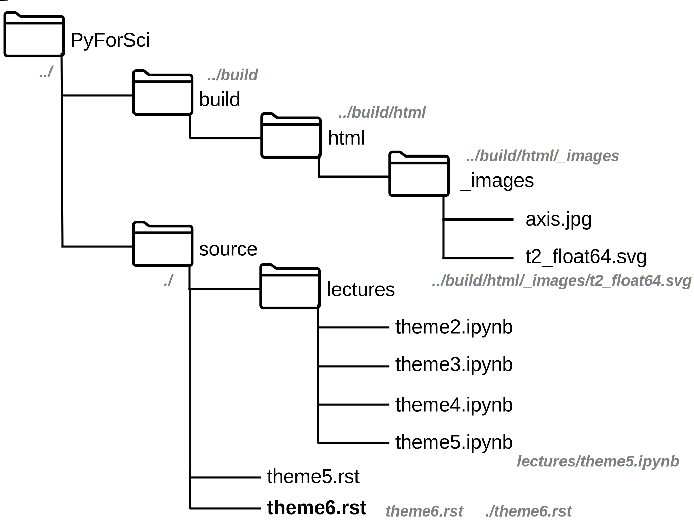

5. Работа с файлами, модуль os¶
5.1. Работа с файлами¶
5.1.1. Файловая система¶
Абсолютный путь - путь, по которому можно найти файл, влючающий название устройства/домена/и(или) корневого каталога. Пример:
C:\Users\admin\Documents\file.txt (windows)
https://yamarus.github.io/PyForSci/source/lectures/theme5.ipynb (web)
/home/ruslan/Documents/work/PyForSci/source/lectures/theme5.ipynb (unix)
Относительный путь - указание пути относительно данного файла/каталога
Рассмотрим некоторую систему вложенных папок и файлов, относительно файла theme5.rst:
В unix системах знак . означает текущую директорию, знак .. - директорию на уровень выше.
5.1.2. Стандартные методы Python¶
Для работы с файлами Python имеет стандартную функцию open.
Документация на оффициальном сайте описывает ее следующим образом:
open(file, mode='r', buffering=-1, encoding=None, errors=None, newline=None, closefd=True, opener=None)
Для обычной работы с текстовыми файлами наиболее важными аргументами являются
file - строка (точнее path-like object) имя относительного или
абсолютного пути к файлу.
mode - режим работы с файлом (можно комбинировать нижестоящие)
r - режим чтения
w - режим записи (удаляет все содержимое файла)
a - открывает для добавления (курсор в конце файла)
+ - открывает для обновления (курсор в начале файла)
b - открывает в бинарном виде
Данная функция возвращает объект файла: f = open('filename', 'r+'. Объект файла f имеет следующие важные методы:
f.read()- читает файл. В качестве аргумента можно указать количество читаемых символовf.readline()- читает текущую строкуf.readlines()- читает все строки в файле, возвращает список строк (list(f)дает тот же эффект)f.write(string)- записывает содержимоеstringв файлf.writelines(list_of_string)- записывает список строкlist_of_stringв файлf.tell()- возвращает текущую позицию курсора в файлеf.seek(offset, whence)- перемещает курсор наoffsetпозицию относительно точки отсчетаwhence.whence=0- начало фала,whence=1- текущее положение,whence=2- конец файла.f.close()- закрыть файл
Предупреждение
По завершению работы с файлом всегда закрывайте его методом f.close()
В случае простой записи в файл можно воспользоваться функцией
print(string, file = f)
Создадим простой файл в рабочем каталоге и запишем в него несколько строк:
f=open('example_file.txt', 'w')
for i in range(5):
print(f'строка {i}', file = f)
f.close()
Содержимое полученного файла example_file.txt:
строка 0
строка 1
строка 2
строка 3
строка 4
Допишем еще одну строку в конец файла.
f = open('example_file.txt', 'a')
f.write('еще одна строка')
f.close()
Прочитаем файл:
f = open('example_file.txt', 'r')
print(f)
print(f.read())
f.close()
<_io.TextIOWrapper name='example_file.txt' mode='r' encoding='UTF-8'>
строка 0
строка 1
строка 2
строка 3
строка 4
еще одна строка
f = open('example_file.txt', 'r')
print(f.readlines())
f.close()
['строка 0\n', 'строка 1\n', 'строка 2\n', 'строка 3\n', 'строка 4\n', 'еще одна строка']
Объект файла является итерируемым, т.е. по нему можно проходить циклом for.
На каждом шаге цикла мы будем получать отдельную строку файла:
f = open('example_file.txt', 'r')
for line in f: print(line, end='')
f.close()
строка 0
строка 1
строка 2
строка 3
строка 4
еще одна строка
5.1.3. Конструкции with .. as и try .. except¶
Менеджер контекста with .. as нужен для обертки блока инструкций
отдельных объектов. Его удобно использовать для простой работы с файлами.
Синтаксис конструкции:
with expression ["as" target] ("," expression ["as" target])* :
suite
#По окончанию инструкций вызывается метод __exit__: файл закрывается автоматически
with open('example_file.txt', 'r') as f:
print(f.read())
#f.read()
строка 0
строка 1
строка 2
строка 3
строка 4
еще одна строка
Конструкция try .. except позволяет обрабатывать исключения.
При попытке сделать действие, которое не поддерживается синтаксисом объекта, возникает ошибка (исключение).
Интерпретатор создает объект исключения и возвращает его программе, нормальная работа программы при этом
прерывается. С помощью конструкции try .. except мы можем перехватывать эти исключения и обрабатывать
их отдельно. Это позволить не останавливать работу программы, а менять ее поведение при возникновении ошибок.
Рассмотрим деление на ноль. В норме мы получим исключение ZeroDivisionError:
k = 1/0
---------------------------------------------------------------------------
ZeroDivisionError Traceback (most recent call last)
<ipython-input-7-60955a76aa18> in <module>
----> 1 k = 1/0
ZeroDivisionError: division by zero
Попробуем перехватить это исключение и вернуть в таком случае бесконечность:
def division(a,b):
try:
r = a/b
except ZeroDivisionError:
r = float('inf')
except Exception as ex:
print(ex.args)
r = float('nan')
else:
print('все хорошо')
finally:
return r
print(division(1,0))
inf
Конструкцию try .. except удобно использовать для работы с файлами и
передачи данных.
fname='example1_file.txt'
f=open(fname, 'r')
print(f.read())
f.close()
---------------------------------------------------------------------------
FileNotFoundError Traceback (most recent call last)
<ipython-input-26-5982f1c2a6fc> in <module>
1 fname='example1_file.txt'
----> 2 f=open(fname, 'r')
3 print(f.read())
4 f.close()
FileNotFoundError: [Errno 2] No such file or directory: 'example1_file.txt'
Мы получили ошибку, поскольку такого файла не существует. Будем возвращать сообщение пользователю об ошибке, если она имеет место:
fname='example1_file.txt'
try:
f=open(fname, 'r')
except:
print(f'проблема с чтением файла {fname}')
else:
print(f.read())
finally: f.close()
проблема с чтением файла example1_file.txt
5.2. Модуль os¶
Модуль os является стандартным модулем python, поддерживающим огромное количество функций для работы с операционной системой.
С полной документацией метода можно ознакомиться на странице с оффициальной документацией
Более короткое и простое описание можно найти тут. Рекомендуется ознакомиться
ниже представлен список лишь некоторых функций.
os.chdir(path) - смена текущей директории.
os.getcwd() - текущая рабочая директория.
os.listdir(path=".") - список файлов и директорий в папке.
os.mkdir(path, mode=0o777, *, dir_fd=None) - создаёт директорию.
OSError, если директория существует.
os.remove(path, *, dir_fd=None) - удаляет путь к файлу.
os.rename(src, dst, *, src_dir_fd=None, dst_dir_fd=None) -
переименовывает файл или директорию из src в dst.
os.rmdir(path, *, dir_fd=None) - удаляет пустую директорию.
os.system(command) - исполняет системную команду, возвращает код её
завершения (в случае успеха 0).
Пример использования данного модуля:
import os
print(os.getcwd())
for f in os.listdir(path="../figs"):print(f)
/home/ruslan/work/PyForSci/source/lectures
t2_float64.svg
path.svg
axis.jpg
path.odg
Модуль os включает в себя вложенный модуль path
Короткое и простое описание модуля os.path. Рекомендуется ознакомиться
os.path.exists(path) - возвращает True, если path указывает
на существующий путь или дескриптор открытого файла.
os.path.getsize(path) - размер файла в байтах.
os.path.isfile(path) - является ли путь файлом.
os.path.isdir(path) - является ли путь директорией.
os.path.join(path1[, path2[, ...]]) - соединяет пути с учётом
особенностей операционной системы.
5.3. Задачи¶
Сгенерируйте
.csvфайл форматаx (units); y (units) x0; y0 x1; y1 ... ... xn; yn
где
xиyкоординаты какой-нибудь простой функции (линия, парабола, синус или что-то другое). Проверьте правильность результата, импортировав полученный файл в какую-нибудь из программ для построения графиков (Excel, Origin, OpenOffice, gnuplot, etc)С помощью функции
os.system()откройте какой-нибудь текстовой файл в блокноте.Вы решили дальше изучать ион \(\textrm{TYR-H}^+\) из задачи 4.5. Непонятно зачем, но вам захотелось сделать серию расчетов по отрыву \(\textrm{H}^+\) иона вдоль по направлению связи \(CA \rightarrow C\) (атомы 5 и 22, соответственно). Для этого вам нужно сгенерировать серию координатных файлов формата „символ_элемента X Y Z“ (на символ элемента - 4 знака, выравнивание по правому краю, на X, Y и Z по 10 знаков, 4 знака после запятой, выравнивание по правому краю). Методами
osсоздайте отдельную папку. Запишите туда серию координатных файлов, с длиной \(\textrm{O-H}\) связи от 0.9 Å до 1.5 Å.В архиве находятся
.csvфайлы с идеальными данными по изучению кинетики с помощью UV-Vis спектроскопии (число в названии файла - время с начала эксперимента). Вы точно знаете, что в системе находится два идеальных вещества с пиками поглощения при 442.00 нм и 681.00 нм. В данных отсутствует шум, а базовая линия вычтена идеально.К сожалению, с самими файлами случилось почти все плохое, что вообще могло случиться (один из файлов у вас наврятли получится открыть вообще).
Обработайте данные, сохраните в отдельный файл данные в формате
время; C1; C2. Импортруйте его в стороннюю программу и постройте график.